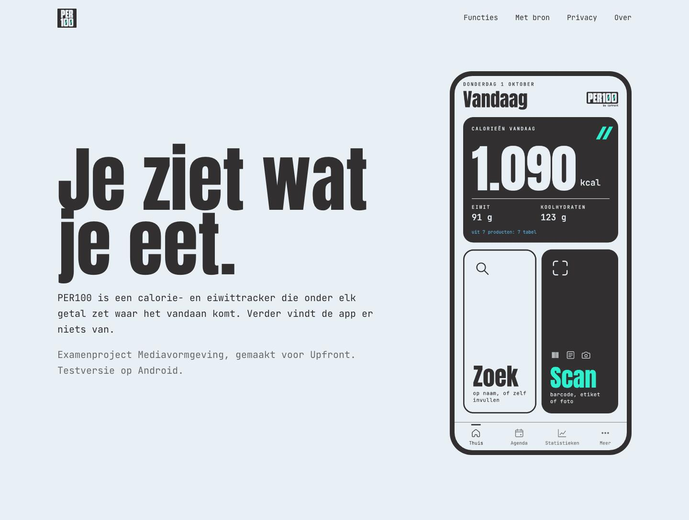
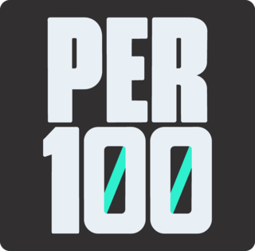
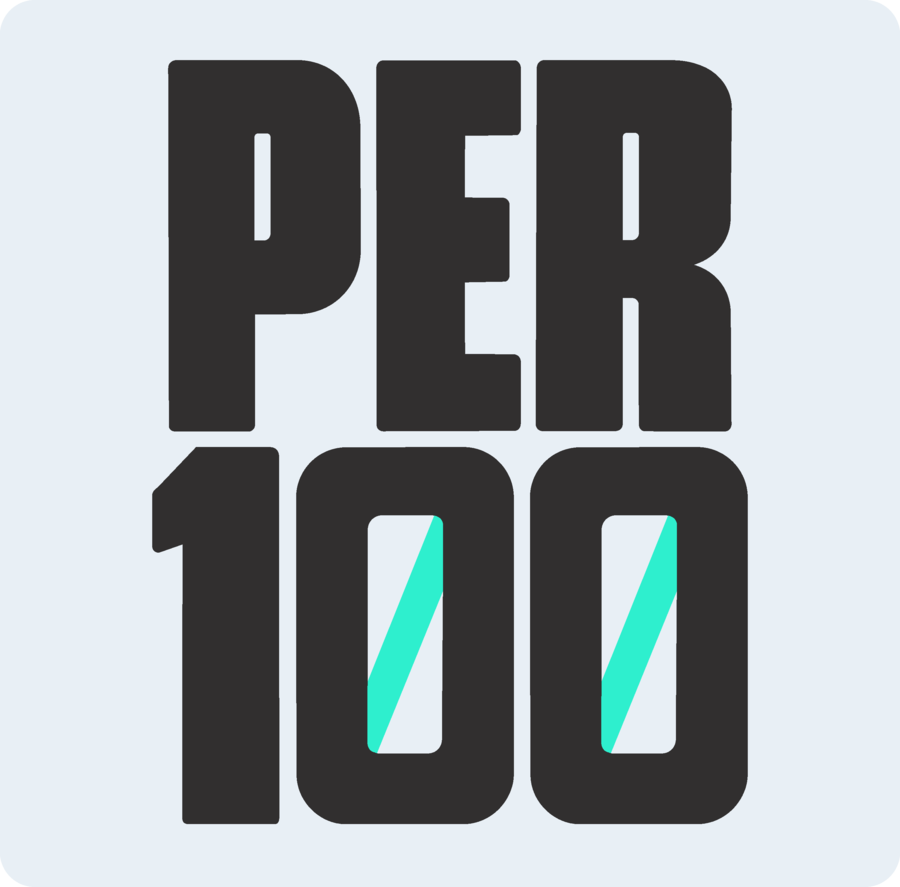
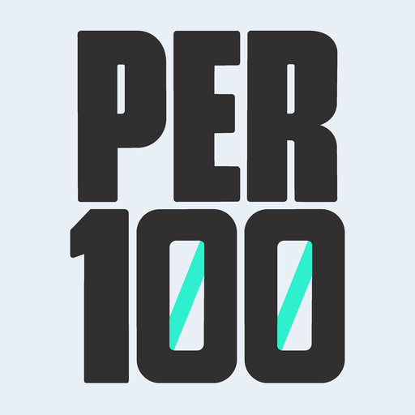
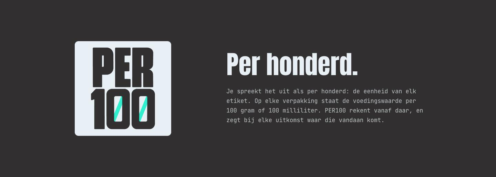
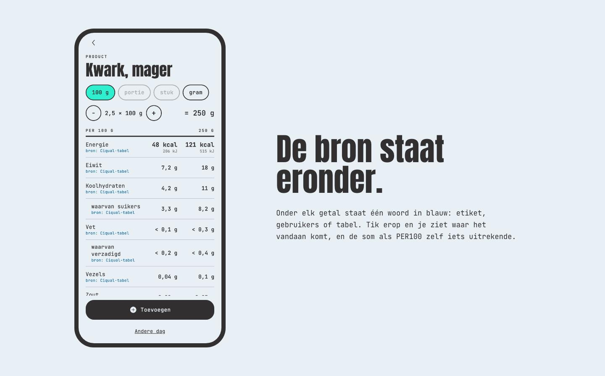
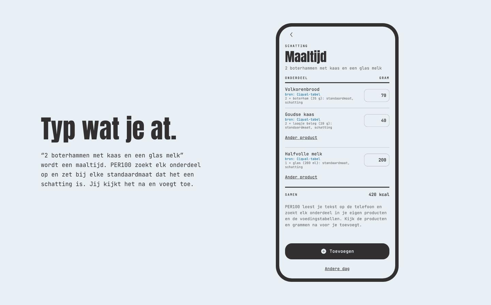
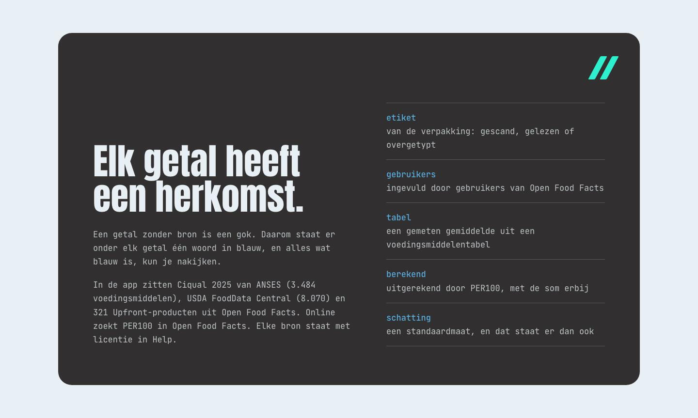

Brand Identity · PER100
PER100, uitgesproken als per honderd: de eenheid van elk etiket, waar de voedingswaarde per 100 gram staat. Het hele merk is opgebouwd als een voedingswaardetabel: één groot getal, hairlines, kolommen en onder elk getal een bron.




De eenheid die op elk etiket staat. Wie de naam leest, weet meteen waar de app over gaat, zonder dat er dieet of gezond in hoeft.
Het woordmerk zet PER100 in een vlak. Het app-logo stapelt PER boven 100 op een tegel. In beide zitten schuine teal strepen in de nullen.
Het app-icoon is afgeleid van het app-logo, in een lichte en een donkere variant die je op Android zelf kiest.
Zilver Wit is het papier van het etiket, Kool Zwart is het feit. Teal licht als enige op, maar betekent nooit goed of slecht. Alles wat blauw is kun je nakijken. Rood en groen bestaan niet in deze app.
Eén groot getal is het beeld. Hairlines, kolommen en rechts uitgelijnde getallen doen de rest, met 31 eigen lijn-iconen van 3 punt en de schuine strepen als terugkerend teken.
Nuchter, Nederlands en kort. Labels van één woord met een punt, en een lege regel zegt eerlijk "Staat niet op de verpakking".
Geen gezond, dieet, afvallen of limiet, en geen uitroeptekens. Een app over eten moet je niet het gevoel geven dat je iets fout doet.



